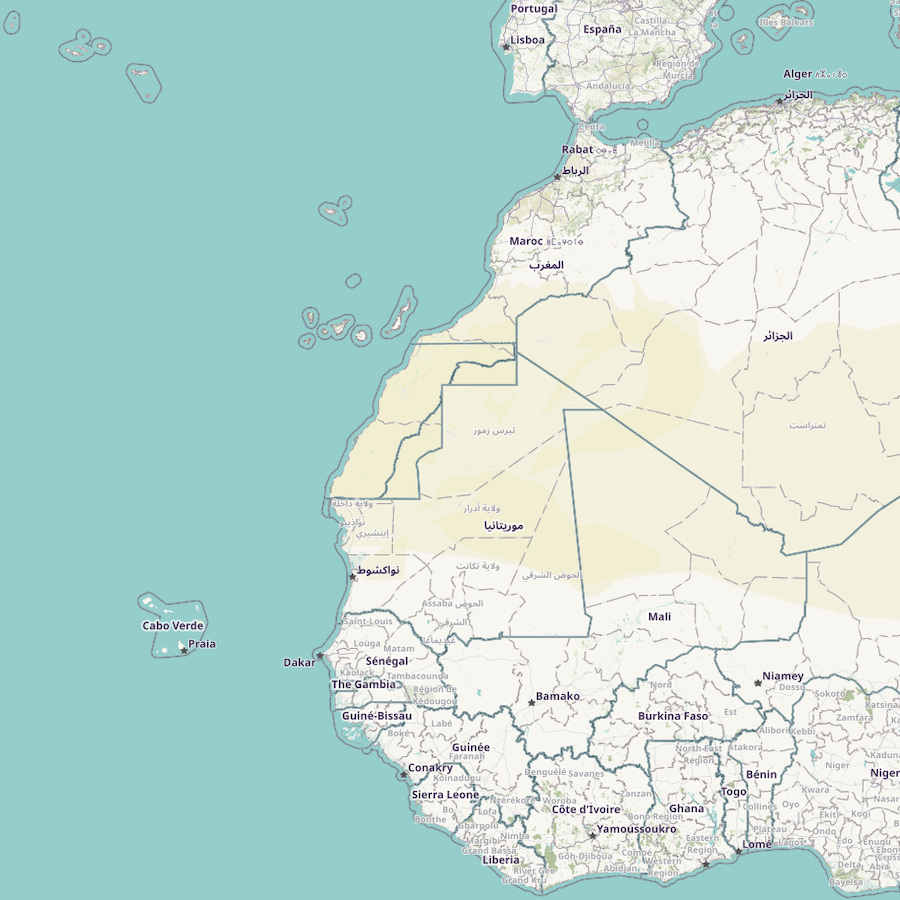

Rediscovering Amílcar Cabral
Book review of Peter Karibe Mendy, Amílcar Cabral: A Nationalist and Pan-Africanist Revolutionary (Ohio University Press, 2019).
When I attended elementary school, a long time ago between 1984 and 1990, I was too young to care much about our namesake: Amílcar Cabral (1924–1973). I grew up in Teltow, a town in communist East Germany on the border to West Berlin. Growing up in the shadow of the Wall, which stood a short walk from our house, I knew nothing other than the Cold War division into East and West. The world seemed settled that way. All the same, by the 1980s, everyone who dared to open their eyes could see that ‘really existing’ socialism had failed. People sensed that the German Democratic Republic (GDR) could not last much longer in that form. But what else? The fall of the Wall and the collapse of communism appear logical in hindsight, yet the rupture of 1989 came as a shock.
As pupils of the Amílcar Cabral School we knew the basic story: Cabral was a freedom fighter in Africa, assassinated by evil forces. We learnt the country was called Guiné-Bissau. Even though I had fallen for maps, I doubt that as a young boy I could find Bissau on a world map. Socialist education in the East remained as Eurocentric as in the West. The other half of the story, Cabo Verde, was overlooked. Granted, Cabral’s war of independence took place in the Guinean mainland. The islands never saw serious military action. But a deeper reason accounted for the silence about Cabo Verde. In the 1980s, communist leaders regarded Bissau as a firmly Marxist, Moscow-friendly ally. Cabo Verde, meanwhile, though not democratic until 1990, navigated a delicate zig-zag course of non-alignment in international affairs. Domestically, the ruling party paid lip service to Marxism, but moved away from it.
As a child I knew there were bad guys in the story, but who exactly was less clear. If pressed, I might have remembered that the colonisers were Portuguese. In a communist telling of the story, national identity stayed secondary. The bad guys were ‘imperialists’, a much broader concept. Imperialists, with an added ‘Western’ or ‘Capitalist’ moniker for emphasis, were presented as a straight line in history: beginning with feudal lords and Prussian junkers, followed by fascists and Nazis, and kept alive by the United States of America and West Germany. Befitting the global nature of the Cold War, Marxism argued that it all boiled down to ‘the system’. Western capitalism exploited Guiné-Bissau — and, when you think about it, really killed Cabral. Colonialism was not the main story, merely a side effect of capitalism.
Racism was mentioned in passing, when deemed excessive. But racism and the underlying Eurocentric worldview were not major topics. After all, Marxism became just an alternative version of Eurocentrism. The Portuguese almost disappeared from the story. As if there was no agency; a common complaint about Marxist theory, of course.
This proved the problem: the story got too abstract. At times, human suffering was personalised to illustrate the plot. But there was little care for people. Little was known about Cabral as a person. He was reduced to his role as a freedom fighter. Guineans and Caboverdeans did not feature as people, only as good anti-imperialist Marxists. The Portuguese did not appear as real actors either, more as puppets of the capitalist system.
As any good storyteller knows, this abstract systems story sounded boring as hell. Nobody listened. Like many other things in communism, it became a hollow ritual act. You listened to communist speeches without really listening.
Despite our school’s namesake, we knew nothing about Africans. It mirrored how foreigners, strangers and ‘guests’ from abroad were kept apart from society in the GDR. Official mottos of friendship and solidarity aside, ordinary East Germans had scant contact with ‘others’ in everyday life.
After the fall of the Berlin Wall in 1989–90, I switched to a secondary school in West Berlin. Teltow was living no longer at the end of the world, facing a deadly border. The town turned into just another suburb of a unified Berlin.
The elementary school lost its name in the 1990s, stayed nameless for a few years, and was then renamed after Ernst von Stubenrauch (1853–1909), the region’s long-standing Landrat or administrator. From a Marxist freedom fighter to a conservative Prussian civil servant: the role models of history were changing.
Nothing was wrong with Cabral himself to necessitate a name change. However, it was never about him as a person in the first place. Our school carried his name as a symbol, as part of communist propaganda. Personally, I would not have removed the name. The school should have started to teach about the actual person. Still, I can understand why the majority was keen to get rid of the ‘public markers’ of the old regime.
After finishing school I studied international politics and history at the London School of Economics and a famous department in Aberystwyth, Wales. I travelled the world, though regrettably never made it to Africa. I had forgotten the name Amílcar Cabral.
Life can be funny. During a longer stay in the Algarve, in the south of Portugal, I fell in love with my future wife, who was born in Mindelo, on the Caboverdean island of São Vicente. Amílcar Cabral had spent seven years of his youth in Mindelo. Here he came up again in my life.
If you draw a line between Mindelo and Berlin, the midpoint falls close to Faro, Portugal, where we met and live today. It was meant to be. I began studying about Cabo Verde and its history. And I had to learn more about Cabral. This time, seriously.
Explainer:
Cabo Verde is the Portuguese name and official title of the country known in English as Cape Verde. Ironically, Cabo Verde is neither a cape nor particularly green. The archipelago lies about 570 kilometres (350 miles) west of Cap-verte in what today is Dakar, Senegal (and which is, indeed, a cape and green).
Guiné in Portuguese, or Guinea in English, is the name that Portuguese explorers gave to all of West Africa. Later, as the European colonisers split the region, this led to several country names: ‘Portuguese’ Guiné, which today is Guiné-Bissau, and ‘French’ Guiné, which became Guiné-Conakry and today is the Republic of Guinée in French.
I prefer to write Cabo Verde and Guiné-Bissau because these are the official titles in the countries’ official language, Portuguese.
Source: OpenStreetMap
Today, Amílcar Cabral is little known outside the Portuguese-speaking world. Even in Portugal and Brazil, while the name might ring a bell, knowledge does not run deep. In English, books by Basil Davidson (1968, 1974) and Patrick Chabal (1983) had raised Cabral’s profile for a while, at least among scholars curious about Africa. But general awareness remains low in the West.
Peter Karibe Mendy’s new biography Amílcar Cabral: Nationalist and Pan-Africanist Revolutionary, published by Ohio University Press in 2019, comes thus at the right moment and offers the right kind of work: a short, readable introduction for the general reader.
The book does not require any prior knowledge of African or Portuguese history. Written in a clear, engaging, and jargon-free language, it is argumentative and thought-provoking. Readers will sense Mendy’s sympathy for Cabral, which makes for a compelling biography. Even though on occasion I wish the author had shown a more critical eye for Cabral’s legacy.
Cabral was assassinated in January 1973, at the age of 48, shortly before his dream of a free Guiné and Cabo Verde became a reality. Revolutionaries do not leave a tidy archive, complicating the work of later historians. On certain pages I hoped to catch more about his private life. But the available material might make it difficult.
For example, in passing we learn that Cabral and his Portuguese wife, Maria Helena Rodrigues, were divorced in 1966. We do not discover why. Again in passing we read that, in the same year, Cabral married his second wife, Ana Maria. Perhaps it is wise for the professional historian not to speculate. As a reader, I admit, I was certainly eager to see further private details.
Peter Karibe Mendy has written a biography, but in a modern way, giving us the context. Mendy, a professor at Rhode Island College (in Providence, USA), is an expert on the history and politics of Guiné-Bissau. He masterfully weaves all the background information into the flow of the text; which is a key strength of the book, especially for general audiences. We hear not only about Cabral, but about West Africa, Portugal, and the Cold War setting.
¶
ADD REST HERE